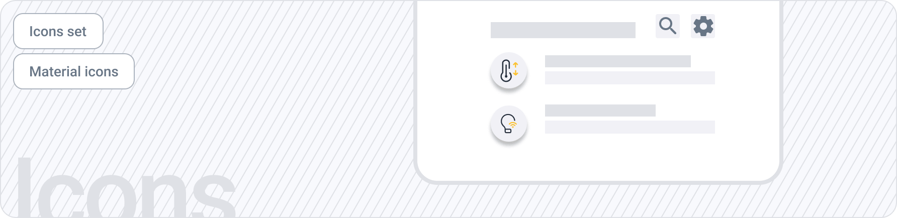
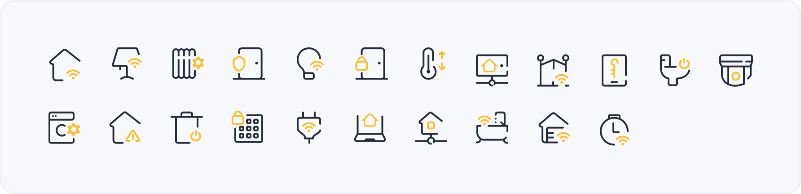
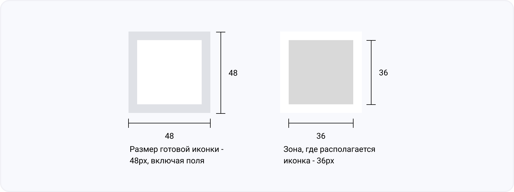
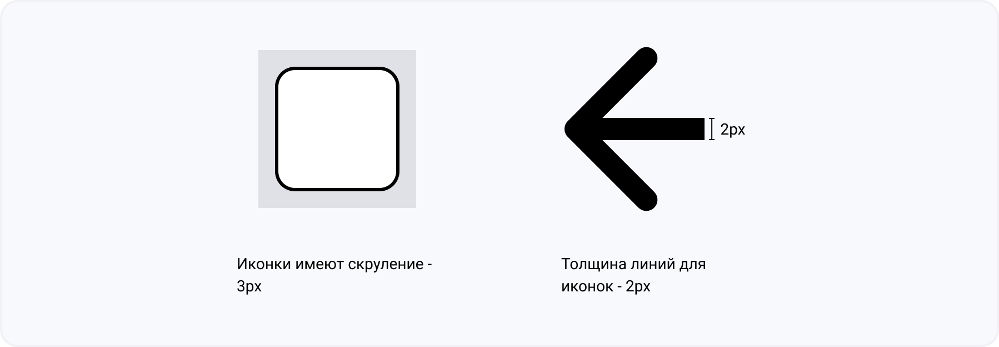

Иконки
Иконки используются для обозначения действий, состояния элемента и даже для классификации данных. Все значки, созданные и добавленные в систему, должны быть понятными, интуитивно понятными и последовательными. Их следует использовать экономно и в соответствии с их первоначальным назначением.
 Компонент в FigmaНабор иконок
В дизайн-системе используются оригинальны иконки, созданные дизайнерами. Но в некоторых случаях могут использоваться иконки из Material Design
Добавление иконок в набор системы
Шаги, которые необходимо выполнить:
- UX-дизайнер проверяет текущий системный набор, чтобы увидеть, можно ли использовать существующий значок.
- Если в системе нет подходящего значка, UX-дизайнер может изучить новый значок, который будет использоваться на концептуальном этапе.
- UX-дизайнер работает с командой дизайнерских систем во время этого процесса, чтобы убедиться, что новая иконка соответствует установленным рекомендациям по дизайну.
- Как только новый дизайн значка будет одобрен и готов к разработке, иконка добавляется в набор
Стили
 Размеры иконок
Рекомендуется использовать размер иконок 48х48px.